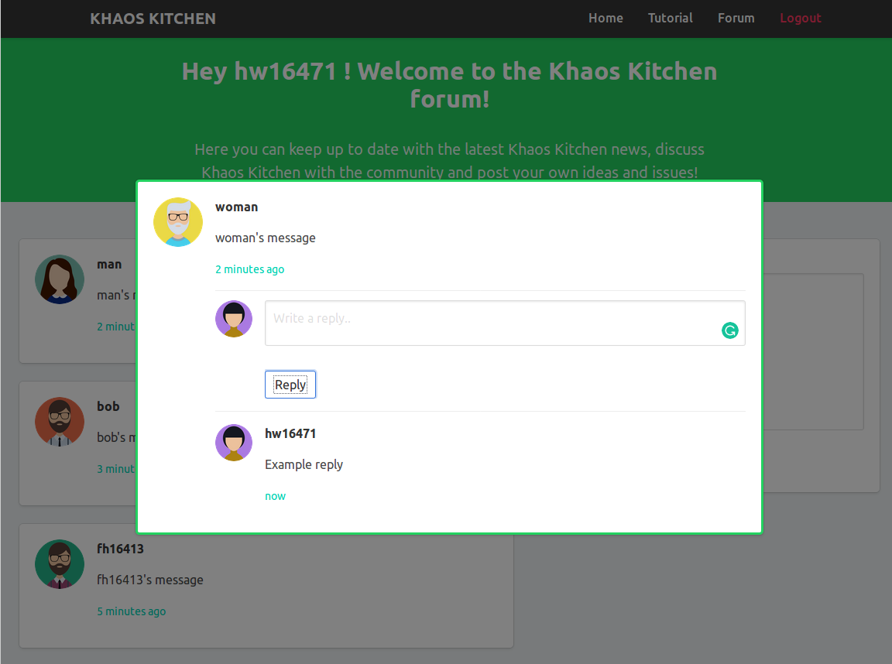

Harry Waugh
A driven, ambitious and rounded graduate from the University of Bristol, interested in HPC, Computer Graphics and Deep Learning.
Experience
Maths Tutor - St Mary Redcliffe School (2017-2019)
Intern - Advanced Computing Research Centre (2019)
Contact
07714190277
hw16471@bristol.ac.uk
View My LinkedIn Profile
Portfolio
CV
The lastest version of my CV can be downloaded here.
Computer Graphics Raytracer
Overview
This project involved building a Real-Time Raytracer from scratch using OpenCL, GLM and SDL. As can be seen above, this raytracer was used to render the Cornell Box where phenomena such as reflection and refraction have been showcased. The realism of the rendered image was improved further using anti-aliasing and soft shadows. Other Cornell Box scenes are shown in the images below:
Technologies
- C
- OpenCL
- OpenGL Mathematics (GLM)
- Simple DirectMedia Layer (SDL2)
Compile and Run
git clone git@github.com:ainsleyrutterford/UOB_Raytracer
cd UOB_Raytracer
source clean_build.sh
Requirements: A GPU, OpenCL, GLM, and SDL2
Parallel Optimisations of a Lattice Boltzmann Code (Using the BlueCrystal Supercomputer)

Overview
This project was all about learning how to exploit different hardware to improve the runtime of a Lattice Boltzmann code, which is widely used for simulating fluid dynamics. Popular programming platforms like MPI, OpenMP and OpenCL were each implmented and tested in various different combinations. The most efficient of these was OpenCL or MPI+OpenCL, which utilised one or more GPUs. If you want know more about this, please read the article I wrote.
Technologies
- C
- OpenCL
- MPI
- OpenMP
Compile and Run
git clone git@github.com:hw16471/UOB_OpenCL_LBM
cd UOB_OpenCL_LBM/submission
make
./d2q9-bgk ../input_128x128.params ../obstacles_128x128.dat
Requirements: A GPU, OpenCL
Disseration: Using Sensor Fusion and Deep Learning to Improve Activity Tracking

Overview
I wrote my dissertation for my Computer Science degree on whether the accuracy of GPS tracking for sports activities (running, cycling, walking) could be improved using additional sensors found in a smartphone. Initially, I implemented a Kalman Filter to fuse the readings of each sensor, this was written in python and used popular libraries like NumPy. I then researched and taught myself the theory behind Recurrent Neural Networks (RNNs) in order to implement them using tensorflow and keras. This project was supported by the Oracle Innovation Accelerator program, who generously gave me access to a cloud compute instance.
Technologies
- Python
- NumPy, SciPy and Pandas
- Tensorflow
- Keras
Compile and Run
To train model with test data:
git clone git@github.com:hw16471/ActivityTrackingWithSensorFusion
cd ActivityTrackingWithSensorFusion
python deep_learning.py
Requirements: A GPGPU, Python, Tensorflow_GPU, NumPy, Keras
Web Technologies

Overview
This project involved creating a website for a University of Bristol games project, Khaos Kitchen. The website showcased a range of different technologies, each used with respect to web standards and compatability. A working forum was set up using a NodeJS server and an SQLite3 embedded database. The forum was created dynamically using templating engine ‘pug.js’, and requested different parts of the forum ‘on the fly’ as the user needed them.
Technologies
- HTML ( Dynamically created using Pug.js )
- Javascript ( JQuery, Ajax )
- CSS
- NodeJS Server with embedded SQLite3 database
Compile and Run
git clone git@github.com:hw16471/UOB_Web_Tech_CW
cd UOB_Web_Tech_CW/site
node server.js
Requirements: NodeJS and Packages found in packages.json
Applied Security - DPA Attacks

Overview
This project developed my understanding of how AES encryption works and the different ‘trade offs’ between speed, memory usage and ultimately, security. An AES implementation was first developed to run a scale-board from the University of Bristol, this device has severe hardware limitations and thus any implementation must be efficient. One of the ways this was done was to pre-compute the sbox function. A Differential Power Attack (DPA) was then created in python to interact with the board in order to gather power traces. These recorded traces could then be compared to hypothetical power consumption values for a chosen message in order to recover the key, using approximately 125 traces. A counter-measure for this style of attack was implemented called masking, this carefully used 6 masks throughout the encryption process to prevent information leaking from the CPU. This prevented key recovery for ‘first order’ DPA style attacks.
Technologies
- C
- Python
- Multiprocessing and NumPy packages
Compile and Run
Attacks require a scale-board, or dat file containing it’s traces. If this can be obtained, attacks can be run with:
git clone git@github.com:hw16471/AppliedSecurity
cd AppliedSecurity/39824/scope
make parallel_attack.py
Requirements: A scale-board.
Detecting Dartboards
Overview
This project looked at the Viola-Jones classifier and transforming images into the Hough space. Using the Hough space, line and circle detection was combined to identify dartboards within images.
Technologies
- C++
- OpenCV
Compile and Run
git clone git@github.com:hw16471/UOB_DartboardDetector
cd UOB_DartboardDetector/finalversion
make all
./output
Requirements: CPP and OpenCV
Text can be bold, italic, or strikethrough.
There should be whitespace between paragraphs.
There should be whitespace between paragraphs. We recommend including a README, or a file with information about your project.
Header 1
This is a normal paragraph following a header. GitHub is a code hosting platform for version control and collaboration. It lets you and others work together on projects from anywhere.
Header 2
This is a blockquote following a header.
When something is important enough, you do it even if the odds are not in your favor.
Header 3
// Javascript code with syntax highlighting.
var fun = function lang(l) {
dateformat.i18n = require('./lang/' + l)
return true;
}
# Ruby code with syntax highlighting
GitHubPages::Dependencies.gems.each do |gem, version|
s.add_dependency(gem, "= #{version}")
end
Header 4
- This is an unordered list following a header.
- This is an unordered list following a header.
- This is an unordered list following a header.
Header 5
- This is an ordered list following a header.
- This is an ordered list following a header.
- This is an ordered list following a header.
Header 6
| head1 | head two | three |
|---|---|---|
| ok | good swedish fish | nice |
| out of stock | good and plenty | nice |
| ok | good oreos |
hmm |
| ok | good zoute drop |
yumm |
There’s a horizontal rule below this.
Here is an unordered list:
- Item foo
- Item bar
- Item baz
- Item zip
And an ordered list:
- Item one
- Item two
- Item three
- Item four
And a nested list:
- level 1 item
- level 2 item
- level 2 item
- level 3 item
- level 3 item
- level 1 item
- level 2 item
- level 2 item
- level 2 item
- level 1 item
- level 2 item
- level 2 item
- level 1 item
Small image

Large image

Definition lists can be used with HTML syntax.
- Name
- Godzilla
- Born
- 1952
- Birthplace
- Japan
- Color
- Green
Long, single-line code blocks should not wrap. They should horizontally scroll if they are too long. This line should be long enough to demonstrate this.
The final element.